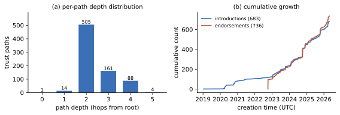
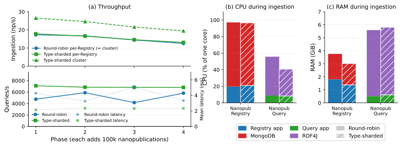

A Robust Decentralized Infrastructure for Trust-Aware Open Knowledge Sharing
- Modified
Abstract
Semantic technologies and models have matured and become very powerful tools to increase the power and accuracy of recent AI approaches. However, we currently lack a shared infrastructure where semantically structured knowledge can be reliably published and queried, both by humans as well as AI agents. Here we show how this gap can be filled by a global ecosystem that aligns with the original Semantic Web vision with respect to openness, decentralization, and formal semantics, but also targets trust and redundancy. Our approach is based on the concept and technology of nanopublications with content-addressed identifiers and a layered peer-to-peer network of publishing services, query services, and user applications. It applies a trust algorithm from links that are published as nanopublications themselves. We present a novel trust propagation algorithm IDEBT and prove its properties of being robust, efficient to compute, and reproducible. We evaluate the ecosystem on a multi-node test deployment running a synthetic publish/query workload under two coverage configurations, complemented by a descriptive analysis of the live deployed trust network. Our positive results show that such a decentralized network of services based on nanopublications has the capacity and potential to serve as a universal and globally integrated knowledge sharing platform.
Keywords
- nanopublications
- decentralization
- open data
- trust network
Introduction
The Semantic Web was originally envisioned as an extension of the World Wide Web in which information is given well-defined meaning, enabling computers and people to work in cooperation [3]: knowledge openly published in formally structured form, linked across sources, and processed by autonomous agents, yielding a global decentralized information infrastructure for precise reasoning with shared semantics.
Two and a half decades on, important components of this vision are mature and tested: RDF, OWL, SPARQL, SHACL, and a wide variety of libraries, triple stores, applications, and vocabularies [13]. However, large parts of the social and infrastructural pieces remain unrealized. There is no generally accessible method or channel to easily publish semantically structured contributions such that they can be picked up immediately by knowledge consuming users or applications; there is no global trust layer that lets clients decide which sources to trust without delegating that judgment to a central platform; there is no unified interface to globally query published semantic statements; and there is no model for sustaining infrastructure cost as usage scales beyond what a single operator can cover. Wikidata [41] probably comes closest, but is restrictive on its content, set up as a centralized monolithic system, and does not provide a trust framework that transcends the scope of the system itself.
The Knowledge Space [18] is a vision of such a global infrastructure: an open and decentralized global socio-technical ecosystem in which knowledge is shared as small, immutable, uniquely identified, and cryptographically signed records, and in which trust in agents and services is established through transparent algorithms over community assessments. We are here proposing a concrete implementation of that vision, providing the needed record format, signing infrastructure, registries, query services, and trust computation.
The research question we address is therefore: How can a decentralized infrastructure enable open, trust-aware knowledge sharing at scale, without delegating trust judgment to a central operator? The main contributions of this paper are:
- A federated architecture for decentralized and scalable nanopublication publishing and querying.
- A deterministic and bounded trust algorithm called IDEBT that yields in a decentralized nanopublication-based environment a locally verifiable trust network that other services can build upon.
- Software components implementing the architecture and trust algorithm above, in the form of Nanopub Registry and Nanopub Query.
- A descriptive analysis of the live deployed network applying the architecture, the trust algorithm, and the software components above, demonstrating the network's overall practical functioning.
- A controlled multi-node deployment study demonstrating that per-Registry ingestion capacity is preserved under type-sharded coverage, and query latency stays in the millisecond range.
Background
Nanopublications were first introduced for capturing individual scientific claims [11,33], and later broadened to capture any kind of formally structured information entity [20,21]. Structurally, each nanopublication is a small bundle of named RDF graphs that packages an assertion together with its provenance and publication metadata into a single, self-contained, citable unit. They have been applied for use cases such as gene–disease relations [34], drug–drug interaction [1], biological pathways [19], biotic interactions [19], FAIR computational workflows [35], scholarly micro-contributions and open peer review [5], linguistic corpora [26], and historical period gazetteers [10]. Beyond specific use cases, nanopublications have also been studied and deployed as concrete implementations of FAIR Digital Objects [30,36]. Identity, verifiability, and immutability of nanopublications are addressed by Trusty URIs [22], which embed a content-derived cryptographic hash into the URI itself so that every reference and every retrieval is self-verifying. Collections of nanopublications can be referenced through indexes [24], which are themselves nanopublications. A first generation of decentralized nanopublication services [23] built an open network of peer-replicating publishing servers that accept nanopublications, allow them to be cryptographically signed, store them as a single flat per-server collection, and expose them through HTTP endpoints.
As complementary technology, there exist a number of protocols and platforms for publishing and querying Linked Data over HTTP. The W3C Linked Data Platform [37] standardizes read–write RESTful access to RDF resources; Solid [31] builds per-user personal datastores on top of it, and the FAIR Data Point [4] supports the well-defined publication of FAIR metadata. In contrast to nanopublications, which are deliberately released into the open so that they can be replicated as widely as possible to maximize their value for everybody, Solid focuses on data over which users want to retain control and ownership, and which should therefore be distributed as sparingly as possible. On the querying side, Triple Pattern Fragments [40] reduce server cost by shifting more work to clients, and Comunica [39] generalizes this idea into a modular Linked Data federation engine.
Provenance has a long history in the Semantic Web community. Early work introduced the canonicalization and digital signing of RDF graphs [7] to make attribution verifiable, and named graphs [8] then established the graph as the unit at which provenance can be attributed. The PROV ontology [25] subsequently standardized provenance representation, and more recently RDF canonicalization has been standardized [29].
Trust in open networks has been approached along two main lines. The OpenPGP web of trust [6] binds identities to cryptographic keys through peer attestations, with keyholders signing each other's keys and clients inferring trust along the resulting paths; Levien's analysis of attack-resistant trust metrics [28] subsequently formalized the resistance properties such systems need under open membership, where a single attacker may control arbitrarily many identities, a Sybil attack in the sense of Douceur [9]. A second line treats trust as a value propagated over a graph of endorsements: EigenTrust [16] computes a global reputation by power iteration over local trust weighted by pre-trusted peers, TrustRank [12] biases PageRank toward a curated seed set, and Appleseed [42] propagates trust by spreading activation with energy decay and a pruning threshold. The broader landscape of trust and reputation systems is surveyed in [15].
Beyond the Semantic Web, content-addressing has emerged as a recurring architectural element for decentralized integrity: IPFS [2] generalizes hash-as-identifier to a Merkle DAG over arbitrary bytes, and TerminusDB applies a git-like, content-addressed delta model to RDF storage. On the identity side, W3C Decentralized Identifiers [38] decouple identifiers from central registries.
Several decentralized social-network protocols have begun to inform research-oriented platforms for scholarly collaboration. ActivityPub [27] enables federated message exchange across independently operated servers and underlies Mastodon and the wider Fediverse. The AT Protocol underlying Bluesky [17] introduces composable moderation through third-party labelers to which consumers subscribe, letting each consumer assemble a personal trusted view from independently signed assertions. Semble is a research-oriented social knowledge network built on the AT Protocol that gives researchers ownership of their data across applications and surfaces collections through peer networks rather than algorithmic feeds. Complementing these protocol-level efforts, the Open Research Knowledge Graph [14] follows a curated approach, representing scholarly content directly as a structured knowledge graph.
In summary, prior work provides self-verifying nanopublications via Trusty URIs, signed graphs for verifiable attribution, seed-anchored trust propagation, and the first-generation network's federated publishing model. However, no existing system provides micro-publications that are at the same time peer-to-peer replicated, verifiable via a trust network, and queryable at scale.
Architecture
Our approach presented here addresses the gaps of the existing first-generation nanopublication network [23], by proposing a second-generation architecture that adds full cryptographic verifiability, trust network inclusion, and efficient distributed data slicing for improved long-term performance and scalability. The resulting ecosystem is thereby trust-aware, decentrally governed, queryable at multiple granularities, resilient, and designed to scale along the data partitioning axes of public keys and nanopublication types, while preserving the openness, immutability, and provenance support that already characterized the first generation.
Overview
Functionally, the ecosystem consists of three layers: publishing and retrieval of nanopublications, querying over their content, and user-facing applications. As with the first-generation network, the first two are kept separate so that the complexity of querying cannot compromise the performance and stability of publishing and retrieval. The publishing/retrieval layer is implemented as a federated set of Nanopub Registries, which ingest, validate, and replicate nanopublications based on their digital signatures and Trusty URIs. The querying layer is implemented by Nanopub Query services, which retrieve the nanopublications from the Registries, load and index their content in triple stores, and expose them through SPARQL and REST endpoints. On the application layer, clients such as Nanodash let users share, consume, find, and aggregate nanopublications. Figure 1 shows this overall architecture, including a monitor service (on which links to all services on the current network can be found), and the ecosystem test simulation module to be introduced below.

In contrast to the first-generation network, only signed nanopublications are accepted, with reliable revocation and update via retractions and supersessions. Each nanopublication is stored, replicated, and exposed along two axes: primarily by its signing public key (the one attribute that cannot be forged) and secondarily by its declared types. Registry and Query instances can restrict either axis to define their coverage; replication proceeds along these same axes via paginated checksummed lists, and Query services materialize per-agent and per-type repositories. Each Registry is parameterised by a setting nanopublication that defines its trust seed and policies; the resulting trust state is reproducible and transparent, and the same calculation determines publication quotas. Importantly, settings are not global, but Registries with different settings can coexist on the same network. As settings and the resulting trust states are openly published, clients can pick a Registry whose trust configuration matches their needs, and we therefore do not depend on a network-wide consensus on a single trust seed.
Signatures and types
Three core attributes determine how the Registry stores and organizes its nanopublications: the public key used to sign, the agent that controls that key, and the types each nanopublication declares about itself. Every accepted nanopublication moreover carries a signature (currently using RSA) and the respective full public key, which the Registry in hashed form uses as account identifier. Agents are identified by their URIs (typically ORCIDs) and are bound to their keys through declaration nanopublications.
Each nanopublication further declares a set of types (URIs) that place it in a functional or domain class (biodiversity, retraction, declaration, endorsement, template, and so on). A Registry instance has a configurable coverage, defined as a set of types denoting the kind of nanopublications it accepts and replicates. Coverage may also be left unrestricted, in which case the Registry accepts all types and is limited only by quotas.
The trust layer answers three core questions: what is the root of trust and how does it expand (answered by a setting nanopublication, which parameterises a Registry), who controls which cryptographic keys (answered by declaration nanopublications, which bind agent identifiers to public keys), and who vouches for whom (answered by endorsement nanopublications, which add trust edges between such bindings). These three types are always loaded by a Registry, irrespective of its configured coverage. The simplified TriG examples below show one nanopublication of each type.
# Common head graph (identical across types):
sub:Head { this: a np:Nanopublication ;
np:hasAssertion sub:assertion ;
np:hasProvenance sub:provenance ;
np:hasPublicationInfo sub:pubinfo . }
# (a) Setting assertion: declares the trust root and propagation policy
sub:assertion {
sub:setting a npx:NanopubSetting ;
npx:hasAgents <…initialAgentsIndex> ;
npx:hasBootstrapService <https://registry.knowledgepixels.com/> ,
<https://registry.nanodash.net/> ,
<https://registry.petapico.org/> ;
npx:hasServices <…servicesIndex> ;
npx:hasTrustRangeAlgorithm npx:IDEBT10 ;
npx:hasUpdateStrategy npx:UpdatesByCreator . }
# (b) Declaration assertion: binds an agent (e.g. via ORCID) to a public key
sub:assertion {
sub:keyDecl npx:declaredBy orcid:0000-0002-7487-4881 ;
npx:hasAlgorithm "RSA" ;
npx:hasPublicKey "MIGfMA0GCSqG…wIDAQAB" . }
# (c) Endorsement assertion: approves a declaration nanopublication
sub:assertion {
orcid:0000-0002-1267-0234
npx:approvesOf <https://w3id.org/np/RA2rnE4Gi…> . }
# Common provenance and publication info graphs (identical across types):
sub:provenance { sub:assertion prov:wasAttributedTo orcid:0000-0002-1267-0234 . }
sub:pubinfo { this: dct:created "2025-12-02T12:17:03Z"^^xsd:dateTime .
sub:sig npx:hasPublicKey "MIGf…AB" ;
npx:hasSignature "VFt…EQI=" ;
npx:signedBy orcid:0000-0002-1267-0234 . }Ingest, replication, and revisions
Incoming nanopublications enter a Registry through an HTTP POST endpoint. The Registry checks the Trusty URI, verifies the signature against the declared public key, checks that the nanopublication's types fall within the instance's coverage, and checks the agent's account and publication quota (both derived from the trust calculation of Section 4). If these checks succeed, the nanopublication is accepted and stored in the Registry's MongoDB document store. Their pre-existing Trusty URI is used as internal and external identifier, by which the nanopublication becomes retrievable.
Registries replicate content from one another along the same (pubkey, type) axes they also use for their internal organization. Every (pubkey, type) pair has its own ordered list that is exposed as a paginated HTTP resource. Entries carry a running position and a checksum derived from the Trusty URI hashes of all previous entries via bitwise XOR. Same checksums on different servers thereby always imply the exact same set of entries up to that point in the list, but not necessarily in the same order. This allows peers to detect divergence and resume replication after interruption. An instance therefore does not mirror the entire network: it selects the public keys and types it covers and pulls only the corresponding lists from its peers, alongside the small number of fixed types needed for trust calculation.
Nanopublications are immutable and cannot be unpublished once in the network (but Registries can delete local nanopublications when needed). Retractions are themselves nanopublications that reference, by Trusty URI, the nanopublications they retract. The Registry does not delete the target — every nanopublication remains resolvable by its hash — but it sets an invalidated flag on the corresponding list entry. When the retracted nanopublication is a declaration or endorsement, the invalidation additionally propagates into the next trust-state computation, so that stale keys and edges are removed from the trust graph as part of its normal re-derivation (Section 4, with cross-Registry consistency guaranteed by Lemma 3).
Querying
Registries only allow for lookup by ID and via the nanopublication lists as explained above. More advanced querying is supported by the independent Nanopub Query instances, which build up on the Registries to incrementally fetch new nanopublications, index them in RDF4J triple stores and make them available for SPARQL-based querying.
A Query instance maintains a family of repositories rather than a single monolithic triple store: global ones (a metadata repository, an optional full repository of all four graphs per nanopublication, and an optional thirty-day sliding window) serving general queries across the knowledge graph, plus a per-public-key (pubkey_<hash>) and per-type (type_<hash>) repository for every key and type seen, so that narrow queries hit a correspondingly narrow index. By mirroring the same (pubkey, type) slicing used by the Registries, a Query instance can moreover restrict its coverage to the slices it wants to serve, allowing for targeted services and robust decentralized operation.
Beyond the raw triples, Query maintains an admin graph (npa:graph) recording signatures, agent URIs, declared types, retraction and supersession links, and load-time metadata (monotonic load counter, per-batch checksum, ingest timestamp), making questions like “everything published since load counter N” expressible as simple SPARQL queries. Trust states from the Registries are materialized into a dedicated trust repository, so authority-sensitive queries (e.g. restricting to signing keys currently approved for a given agent) are expressible as plain locally-federated SPARQL joins.
On top of full SPARQL, Nanopub Query lets frequent query patterns be captured once and reused as custom APIs generated from SPARQL templates (extending grlc [32], OpenAPI-compliant). The templates are themselves nanopublications, and the API becomes available immediately after publication.
IDEBT
Here we present an algorithm for robust trust calculation in a decentralized setting, called Iterative Declaration-Endorsement Bounded Trust (IDEBT). This algorithm runs periodically on Nanopub Registries in the background, and materializes the resulting trust state, which is subsequently picked up by the Query instances as well (see Section 3.4).
Trust calculation with IDEBT
In our open and decentralized setting, a trust algorithm must be robust against open-network adversaries, such as Sybil cliques, fan-out flooding, and unadmitted publishers attempting to inflate computation cost. We therefore need to put solid limits to the direct and indirect influence each identity can exert. The algorithm must also be efficient to compute at the global scale in a federated setting, where trust network calculation should not be restricted to a few powerful nodes. Specifically, we cannot expect a full endorsement network to be available upfront, but the algorithm should load trust edges iteratively and selectively. Finally, the algorithm must be reproducible in the sense of being bit-stable across peers so that the resulting trust state can itself be a content-addressable artifact that downstream services can mirror and if needed verify.
Intuitively, IDEBT lets trust flow outwards from a fixed budget: the setting names a seed of initially trusted agents, who share a total budget of 1.0. Each trusted agent passes a fraction of its share on to the agents it endorses, so shares shrink with every hop and the total never grows. Agents reached above a minimum share become trusted and their endorsements are followed to further distribute trust score shares. Each account's resulting score reflects how strongly and directly the seed community vouches for it.
Operationally, each Nanopub Registry derives a per-public-key trust score by running IDEBT over the nanopublication types introduced in Sections 3.2 and 3.3: declarations bind agents to public keys, endorsements add trust edges between such bindings, and retractions invalidate previously declared edges. For simplicity we assume here that each declaration binds exactly one (agent, pubkey) and each endorsement references exactly one declaration. The main loop of the IDEBT algorithm alternates frontier selection with peer fetches and path expansion, as described in this pseudo-code:
Globals:
peers — configured peer registries (read-only)
setting — setting nanopublication (read-only)
paths — set of trust paths (filled by IDEBT)
IDEBT():
paths ← { (chain = [$], ratio = 1.0, ¬primary) }
declarations ← { peers.fetch(u) : u ∈ peers.fetch(setting.agentDeclCollection) }
endorsements ← ∅
N ← { ($, (a, k)) : (a, k) declared by some D ∈ declarations }
for d = 1 to MAX_DEPTH:
expand ← SelectFrontier(d - 1)
if expand = ∅: break
for p in expand:
k ← pubkey(end(p))
declarations ← declarations ∪ peers.fetch(k, DECLARE_TYPE)
endorsements ← endorsements ∪ peers.fetch(k, ENDORSE_TYPE)
N ← N ∪ { ((a, k), (a', k')) :
∃ E ∈ endorsements signed by (a, k),
∃ D ∈ declarations referenced by E,
D declares (a', k') }
Expand(expand, N)The algorithm iteratively builds a set of trust paths in the global variable paths. Each trust path p records a chain chain(p) of (agent, pubkey) hops with last hop end(p), a ratio p.ratio ∈ [0,1], a primary flag, and depth length(p) = |chain(p)| − 1; $ denotes the root, with the setting as root endorser. Each Registry maintains local sets of declarations and endorsements fetched from peers, from which the trust-edge set N is derived: ((a, k), (a', k')) ∈ N iff some endorsement signed by (a, k) references a declaration of (a', k'). Frontier selection then picks, per endpoint at the previous depth, the highest-ratio non-primary path above MIN_RATIO:
SelectFrontier(d):
expand ← ∅
for x in { end(p) : p ∈ paths, length(p) = d, ¬p.primary }:
p* ← argmax { p.ratio : p ∈ paths, end(p) = x, length(p) = d, ¬p.primary }
if p*.ratio ≥ MIN_RATIO:
expand ← expand ∪ { p* }
return expandThe argmax above may have ties on p.ratio alone, which can be resolved on a secondary key sorthash = hash(setting ‖ pathId) with pathId a function of chain(p), to maximize (p.ratio, sorthash) instead of just p.ratio. Expansion then splits the parent's ratio: a fraction SELF_SHARE stays on the (now-primary) parent, and the rest is distributed across endorsed children.
Expand(expand, N):
for p in expand:
endorsed ← { (a, k) : (end(p), (a, k)) ∈ N,
¬∃ p' ∈ paths : end(p') = (a, k) ∧ p'.primary }
n_agents ← |{ a : (a, _) ∈ endorsed }|
for (a, k) in endorsed:
n_keys ← |{ k' : (a, k') ∈ endorsed }|
r ← p.ratio × (1 - SELF_SHARE) / n_agents / n_keys
paths ← paths ∪ { (chain(p) · (a, k), r, ¬primary) }
p.ratio ← p.ratio × SELF_SHARE
p.primary ← trueIDEBT properties
Three core properties of IDEBT enable its function in the ecosystem. Ratio conservation (Lemma 1) bounds the influence any user can accumulate, no matter how many endorsements or Sybil identities they create, and is the basis of the publication quotas that Registries enforce. The bounded path set (Lemma 2) bounds the computation and the fetches needed per recomputation, keeping the periodic trust derivation efficient as the network grows. Determinism (Lemma 3) makes independent Registries arrive at identical trust states from the same setting, enabling verifiable mirroring: any peer can re-run the calculation and check the published trust-state hash.
Lemma 1 (Ratio conservation). Throughout IDEBT's execution, ∑p∈paths p.ratio ≤ 1.
Proof. After initialization, paths contains the root path of ratio 1, and ratios are only modified inside Expand. For each processed path p, the parent ratio drops to SELF_SHARE · p.ratio and each (a, k) ∈ endorsed contributes a child of ratio p.ratio · (1 − SELF_SHARE) / nagents / nkeys. Since the child weights partition first across agents and then across each agent's keys, the children's total is exactly p.ratio · (1 − SELF_SHARE), and 0 when endorsed is empty. Hence the per-path change is at most zero (Δp ≤ 0), so ∑ p.ratio is non-increasing and remains ≤ 1. ∎
Lemma 2 (Bounded path set). Each agent-key binding (a, k) is the endpoint of at most one primary path in paths, and the full path set is bounded by |paths| ≤ 1 + |seed declarations| + |endorsements|.
Proof. The endorsed set in Expand is defined such that a child path is created for (a, k) only when no primary path to (a, k) exists yet. A path becomes primary only when Expand processes it, and SelectFrontier picks at most one path per endpoint per depth under the ¬p.primary filter; once any path to (a, k) becomes primary, the endorsed filter blocks every further addition to (a, k). Hence each binding admits at most one primary path. Each non-root path is created as chain(p) · (a, k) for a (then-primary) parent p and edge (end(p), (a, k)) ∈ N; since each endpoint admits at most one primary path, p is uniquely determined by end(p), so each path corresponds to at most one element in N. Edges in N are either root edges ($, (a, k)), one per binding in the seed declaration collection, or trust edges ((a, k), (a', k')), one per endorsement signed by (a, k) that references a declaration of (a', k'). The number of root edges is therefore at most the number of seed declarations and each endorsement contributes at most one trust edge, so |N| ≤ |seed declarations| + |endorsements| and |paths| ≤ 1 + |seed declarations| + |endorsements|. ∎
Lemma 3 (Determinism). Two Registries running IDEBT with the same setting over the same nanopublications produce identical paths sets, and hence identical per-key trust scores and identical trust-state hashes.
Proof. The initial state (paths, declarations, N) is a function of setting alone. Each iteration applies two operations. (i) Expand adds, for each (a, k) ∈ endorsed, a child whose ratio is fixed by the set cardinalities nagents and nkeys; the resulting paths set is therefore invariant under iteration order. (ii) SelectFrontier's argmax is unique under the lexicographic tie-break introduced after Expand above, since sorthash is unique per path. Both operations are deterministic in (setting, peers), and so is the final paths set. ∎
IDEBT10 and trust-based scoring
Nanopub Registry currently instantiates IDEBT with MAX_DEPTH = 10, MIN_RATIO = 10−10, and SELF_SHARE = 0.1; we call this version IDEBT10.
Once IDEBT has terminated and paths is populated, the per-key scores and the trust-state hash can be derived:
for each pubkey k:
P_k ← { p ∈ paths : pubkey(end(p)) = k }
ratio(k) ← Σ { p.ratio : p ∈ P_k }
quota(k) ← clamp(GLOBAL_QUOTA × ratio(k), MIN_QUOTA, MAX_QUOTA)
A_k ← { a : ∃ p ∈ P_k, end(p) = (a, k) }
status(k) ← approved if |A_k| = 1
contested otherwise
trustStateId ← hash(canonicalSerialisation(paths))All trust paths ending at a given public key k are summed into a single ratio in [0,1], mapped to an integer publication quota clamped between MIN_QUOTA and MAX_QUOTA so that every trusted agent gets a minimal quota and nobody gets an excessive one. Keys declared by exactly one agent are marked approved; those claimed by two or more are marked contested and can be resolved socially through further endorsements, as the Knowledge Space whitepaper [18] sketches. Finally, the full path set is canonicalized and hashed (currently SHA-256) into trustStateHash, which downstream services can use to mirror a consistent view.
Evaluation
The evaluations described here aim to characterize the trust graph produced by IDEBT on the live deployed ecosystem, and to measure the architecture's behavior under controlled, repeatable load.
Descriptive analysis of network snapshot
We first report here from a descriptive analysis of a snapshot of the deployed trust network as observed at the public Registry instance registry.knowledgepixels.com on 2026-05-04, with trust-state hash 4d07f8db…, via its public API. At the time of the snapshot, the registry held 79,672 stored nanopublications signed by 616 distinct agents covering 692 loaded agent-key accounts.
Figure 2 gives three views of the deployed trust graph. The ratio gate alone keeps every path within five hops of the seed, without ever invoking the MAX_DEPTH parameter: the 14 first-hop paths line up cleanly with the seed agent-keys declared in the setting. Panel (b) shows ratio mass decaying geometrically with depth as Lemma 1 predicts, leaving more than three quarters of the 1.0 conservation budget unused. The path set stays linear in the size of the trust graph rather than combinatorial: the 772 paths split into 695 primary chains and 77 deduplicated extensions, and 94.8% of reached accounts sit at the end of exactly one path.

Trust mass and publication volume are concentrated very differently. The top agent carries less than 1% of total trust mass, but a single bot agent (fip-wizard.ds-wizard.org/wizard) signs 30,089 of the 73,603 nanopublications attributable to loaded keys (≈41%), and the top ten agents together account for roughly 87%. Panel (c) sharpens the temporal picture: the 683 first-time agent-key declarations have been accumulating steadily since early 2019, but the explicit trust layer is more recent. The 736 approved endorsements appear from late 2022 onward, and most of the current trust graph was issued in the last two years by 44 active endorsing keys.
Network simulation design
To complement the snapshot analysis, we ran a controlled multi-node deployment to measure how the architecture behaves under sustained ingestion and querying as the stored corpus grows. The benchmark runs four Registry instances (each paired with MongoDB) and four Query instances (each paired with RDF4J) on a five-node Kubernetes cluster (one control-plane node and four worker nodes), with each Query instance configured to source from a single Registry. Each worker node is a co-located VM with 12 vCores and 24 GiB RAM, with the RDF4J and MongoDB containers each capped at 8 GiB RAM; all four worker nodes run on a single hypervisor (AMD Ryzen Threadripper 7960X, 256 GiB DDR5, NVMe storage in a ZFS pool) under Ubuntu Server 24.04. Workload generators run on three external Raspberry Pi 5 nodes connected over 1 GbE. A workload generator simulates 50 publishing clients across nine parallel processes, drawing authorship from a Pareto distribution and producing four nanopublication types in proportions 0.60 plain assertion, 0.30 comment, 0.05 update, and 0.05 retraction. The benchmark proceeds in phases of 100,000-nanopublication ingestion followed by a 20-minute query workload of 24 concurrent clients issuing three SPARQL queries (weighted 3:1:2): a registry-wide nanopublication count, a global triple count, and a per-type aggregation.
We compare two Registry coverage configurations. In round-robin replication, all four Registries declare full type coverage and an HTTP scheduler distributes incoming submissions among them; every Registry then holds the full corpus through replication. In type-sharded coverage, each Registry covers a fixed 50-of-100 window of publication types (with 25-type overlap between neighbors) so the average type lives on two Registries; retraction and comment nanopublications are still replicated globally. Each configuration runs for four phases, exposing the system to a corpus that grows from 100,000 to 400,000 stored nanopublications (≈13M RDF triples at the 400k scale).
Network simulation results
Figure 3 shows the main results. Type-sharding does not slow the per-Registry ingestion rate: each Registry ingests at roughly the same rate under both configurations across all four phases. Because type-sharded coverage halves what each Registry has to write, the cluster as a whole ingests at an essentially constant ≈1.5× lift over round-robin replication across all four phases, as shown in the top part of panel (a). For a decentralized deployment, this means an open community can increase the corpus the network is able to absorb simply by partitioning type coverage across more Registry operators, without the need of any single operator to do more work.

Type-sharding also lifts read throughput and roughly halves mean response time, with no failed or timed-out queries in either run. Across the 20-minute workload of 24 concurrent clients, the type-sharded cluster serves about 6,900 queries/s on average at ≈2.3 ms mean response time, against ≈5,150 queries/s at ≈4.0 ms under round-robin. As the corpus grows fourfold, the type-sharded numbers stay essentially flat, as seen in the bottom part of panel (a), while round-robin's throughput and latency become visibly more variable. The mechanism mirrors the ingestion side: each type-sharded Query indexes only the types its paired Registry covers, while every round-robin Query carries the full corpus, so RDF4J indexing pressure scales with total content rather than with the locally-relevant subset. In network terms, two operators each covering half the type space serve more queries faster than two operators each replicating everything.
Resource utilization reflects this division of labor (panels b, c). MongoDB dominates Registry CPU under either configuration, with per-Registry RAM moderately lighter under type-sharding. On the Query side, type-sharding's saving lands on RDF4J CPU, which drops by roughly a third; RDF4J's working set, driven by total content rather than type partition, stays similar across configurations.
Discussion
The ecosystem presented here recombines multiple elements that have been studied separately in earlier work, including with respect to trust calculation. IDEBT's ratio conservation (Lemma 1) bounds any sub-graph's total ratio by a constant factor of the entry mass, and each account inside it receives a single primary path whose ratio depends only on depth and sibling branching, making per-node trust insensitive to engineered Sybil structures. The iterative expansion further bounds the input of the computation: IDEBT never fetches endorsements signed by keys that have not been reached above MIN_RATIO, leaving the work each peer has to do bounded by the trusted frontier rather than by the size of the open network. These theoretical considerations provide worst-case bounds that hold for any adversary structure, and our simulation analyzed capacity and latency under realistic load, while empirically stress-testing the trust layer against actively adversarial agents remains future work.
In short, IDEBT is, to our knowledge, the first trust algorithm that grounds seed-rooted, decay-bounded propagation in a substrate of signed, retractable identity-to-key bindings and endorsements, yielding a deterministic, content-addressable trust state that any peer can mirror.
The mechanisms of per-instance coverage restrictions by pubkey and type, the IDEBT-enabled publication quota, and the per-Registry capacity preservation shown in our simulation study together give the architecture a sustainable foundation that does not depend on a single operator's budget. In the future, we imagine that open Registries serve the long tail of moderate publishers under generous default quotas, whereas institutional or commercial publishers needing higher throughput will need to operate or commission their own coverage-restricted Registry and Query nodes, paying for their needed capacity. IDEBT's per-pubkey quota cap (bounded by Lemma 1's ratio conservation) prevents any single key from monopolizing the open instances regardless of who funds it, and coverage selection lets the same Registry codebase serve as both an open community node and a self-funded private node. These properties also address current concerns around digital sovereignty: as trust is computed transparently and locally rather than granted by a platform, and because any community or institution can run its own Registry and Query nodes over the slices of data it cares about, participants can retain control over their knowledge infrastructure and remain independent of individual providers.
Conclusion
We have presented a second-generation nanopublication ecosystem that takes the Knowledge Space vision from a design sketch to a running, openly accessible infrastructure, using nanopublications universally for signed content, identity bindings, and trust assertions.
The main conceptual contribution is IDEBT, a seed-rooted, decay-bounded, deterministic trust algorithm over retractable identity-to-key and endorsement nanopublications. Because IDEBT is deterministic and re-runnable, the resulting trust state is itself a content-addressable artifact that peers and services can mirror, build upon, and always double-check by re-running.
Our evaluation on a multi-node deployment combined with a descriptive analysis of the live network snapshot demonstrates the architecture's viability and scaling behavior, indicating that a decentralized network of nanopublication services has the capacity to serve as a universal ecosystem for publishing and querying semantically structured knowledge with per-statement provenance and without delegating trust judgments to a central platform.
Supplemental Material Statement
Use of Generative AI
Anthropic's Claude with its Opus 4.7 to 5 models was used during the preparation of this paper to assist with drafting and revising prose, restructuring sections, and suggesting candidate references. The technical contributions of this work — including the architecture, the IDEBT algorithm, the implementation, and the evaluation — are the work of the authors. All AI-assisted text was reviewed and edited by the authors before submission.
References
- Banda, J.M., Kuhn, T., Shah, N.H., Dumontier, M.: Provenance-centered dataset of drug-drug interactions. In: Proceedings of the 14th International Semantic Web Conference (ISWC 2015). Springer (2015). https://doi.org/10.1007/978-3-319-25010-6_18
- Benet, J.: IPFS — Content Addressed, Versioned, P2P File System. arXiv:1407.3561 (2014). https://arxiv.org/abs/1407.3561. Accessed 30 July 2026
- Berners-Lee, T., Hendler, J., Lassila, O.: The Semantic Web. Scientific American 284(5), 34–43 (2001). https://doi.org/10.1038/scientificamerican0501-34
- Bonino da Silva Santos, L.O., Burger, K., Kaliyaperumal, R., Wilkinson, M.D.: FAIR Data Point: A FAIR-Oriented Approach for Metadata Publication. Data Intelligence 5(1), 163–183 (2023). https://doi.org/10.1162/dint_a_00160
- Bucur, C.-I., Kuhn, T., Ceolin, D., van Ossenbruggen, J.: Nanopublication-based semantic publishing and reviewing: a field study with formalization papers. PeerJ Computer Science 9, e1159 (2023). https://doi.org/10.7717/peerj-cs.1159
- Callas, J., Donnerhacke, L., Finney, H., Shaw, D., Thayer, R.: OpenPGP Message Format. RFC 4880, IETF (2007). https://www.rfc-editor.org/rfc/rfc4880.html. Accessed 30 July 2026
- Carroll, J.J.: Signing RDF Graphs. In: Proceedings of the 2nd International Semantic Web Conference (ISWC 2003). LNCS 2870, Springer (2003). https://doi.org/10.1007/978-3-540-39718-2_24
- Carroll, J.J., Bizer, C., Hayes, P., Stickler, P.: Named Graphs, Provenance and Trust. In: Proceedings of the 14th International World Wide Web Conference (WWW 2005). ACM (2005). https://doi.org/10.1145/1060745.1060835
- Douceur, J.R.: The Sybil Attack. In: Druschel, P., Kaashoek, F., Rowstron, A. (eds.) Peer-to-Peer Systems (IPTPS 2002). LNCS 2429, pp. 251–260. Springer (2002). https://doi.org/10.1007/3-540-45748-8_24
- Golden, P., Shaw, R.: Nanopublication beyond the sciences: the PeriodO period gazetteer. PeerJ Computer Science 2, e44 (2016). https://doi.org/10.7717/peerj-cs.44
- Groth, P., Gibson, A., Velterop, J.: The anatomy of a nanopublication. Information Services & Use 30(1–2), 51–56 (2010). https://doi.org/10.3233/ISU-2010-0613
- Gyöngyi, Z., Garcia-Molina, H., Pedersen, J.: Combating Web Spam with TrustRank. In: Proceedings of the 30th International Conference on Very Large Data Bases (VLDB 2004), pp. 576–587 (2004). https://www.vldb.org/conf/2004/RS15P3.PDF. Accessed 30 July 2026
- Hogan, A.: The Semantic Web: Two decades on. Semantic Web 11(1), 169–185 (2020). https://doi.org/10.3233/SW-190387
- Jaradeh, M.Y., Oelen, A., Farfar, K.E., Prinz, M., D'Souza, J., Kismihók, G., Stocker, M., Auer, S.: Open Research Knowledge Graph: Next Generation Infrastructure for Semantic Scholarly Knowledge. In: Proceedings of the 10th International Conference on Knowledge Capture (K-CAP 2019), pp. 243–246. ACM (2019). https://doi.org/10.1145/3360901.3364435
- Jøsang, A., Ismail, R., Boyd, C.: A Survey of Trust and Reputation Systems for Online Service Provision. Decision Support Systems 43(2), 618–644 (2007). https://doi.org/10.1016/j.dss.2005.05.019
- Kamvar, S.D., Schlosser, M.T., Garcia-Molina, H.: The EigenTrust Algorithm for Reputation Management in P2P Networks. In: Proceedings of the 12th International World Wide Web Conference (WWW 2003). ACM (2003). https://doi.org/10.1145/775152.775242
- Kleppmann, M., Frazee, P., Gold, J., et al.: Bluesky and the AT Protocol: Usable Decentralized Social Media. In: Proceedings of the ACM CoNEXT-2024 Workshop on the Decentralization of the Internet. ACM (2024). https://doi.org/10.1145/3694809.3700740
- Kuhn, T.: Knowledge Space. Version 1.0 (2026). https://w3id.org/knowledge-space/. Accessed 30 July 2026
- Kuhn, T., Banda, J.M., Willighagen, E., Ehrhart, F., Evelo, C., Malas, T.B., Dumontier, M., Meroño-Peñuela, A., Malic, A., Poelen, J.H., Hurlbert, A.H., Centeno Ortiz, E., Furlong, L.I., Queralt-Rosinach, N., Chichester, C.: Nanopublications: a growing resource of provenance-centric scientific linked data. In: Proceedings of IEEE eScience 2018, pp. 83–92. IEEE (2018). https://doi.org/10.1109/eScience.2018.00024
- Kuhn, T., Barbano, P.E., Nagy, M.L., Krauthammer, M.: Broadening the scope of nanopublications. In: Proceedings of the 10th Extended Semantic Web Conference (ESWC 2013). Springer (2013). https://doi.org/10.1007/978-3-642-38288-8_33
- Kuhn, T., Chichester, C., Krauthammer, M., Queralt-Rosinach, N., Verborgh, R., Giannakopoulos, G., Ngonga Ngomo, A.C., Viglianti, R., Dumontier, M.: Decentralized provenance-aware publishing with nanopublications. PeerJ Computer Science 2, e78 (2016). https://doi.org/10.7717/peerj-cs.78
- Kuhn, T., Dumontier, M.: Trusty URIs: verifiable, immutable, and permanent digital artifacts for linked data. In: Proceedings of the 11th Extended Semantic Web Conference (ESWC 2014). Springer (2014). https://doi.org/10.1007/978-3-319-07443-6_27
- Kuhn, T., Taelman, R., Emonet, V., Antonatos, H., Soiland-Reyes, S., Dumontier, M.: Semantic micro-contributions with decentralized nanopublication services. PeerJ Computer Science 7, e387 (2021). https://doi.org/10.7717/peerj-cs.387
- Kuhn, T., Willighagen, E., Evelo, C., Queralt-Rosinach, N., Centeno, E., Furlong, L.I.: Reliable Granular References to Changing Linked Data. In: Proceedings of the 16th International Semantic Web Conference (ISWC 2017). LNCS 10587, Springer (2017). https://doi.org/10.1007/978-3-319-68288-4_26
- Lebo, T., Sahoo, S., McGuinness, D. (eds.): PROV-O: The PROV Ontology. W3C Recommendation, 30 April 2013. https://www.w3.org/TR/prov-o/. Accessed 30 July 2026
- Lek, T., de Groot, A., Kuhn, T., Morante, R.: Provenance for Linguistic Corpora through Nanopublications. In: Proceedings of the 14th Linguistic Annotation Workshop (LAW 2020), pp. 13–23. Association for Computational Linguistics (2020). https://aclanthology.org/2020.law-1.2/. Accessed 30 July 2026
- Lemmer-Webber, C., Tallon, J. (eds.): ActivityPub. W3C Recommendation, 23 January 2018. https://www.w3.org/TR/activitypub/. Accessed 30 July 2026
- Levien, R.: Attack-Resistant Trust Metrics. In: Golbeck, J. (ed.) Computing with Social Trust, pp. 121–132. Springer (2009). https://doi.org/10.1007/978-1-84800-356-9_5
- Longley, D., Kellogg, G., Yamamoto, D. (eds.): RDF Dataset Canonicalization. W3C Recommendation, 21 May 2024. https://www.w3.org/TR/rdf-canon/. Accessed 30 July 2026
- Magagna, B., Bonino da Silva Santos, L.O., Kuhn, T., Ferreira Pires, L., Schultes, E.: Nanopublications as FAIR Digital Object Implementations. In: Open Conference Proceedings, Vol. 5: International FAIR Digital Objects Implementation Summit 2024 (2025). https://doi.org/10.52825/ocp.v5i.1417
- Mansour, E., Sambra, A.V., Hawke, S., Zereba, M., Capadisli, S., Ghanem, A., Aboulnaga, A., Berners-Lee, T.: A Demonstration of the Solid Platform for Social Web Applications. In: Proceedings of the 25th International Conference Companion on World Wide Web (WWW 2016 Companion). ACM (2016). https://doi.org/10.1145/2872518.2890529
- Meroño-Peñuela, A., Hoekstra, R.: grlc Makes GitHub Taste Like Linked Data APIs. In: Sack, H., Rizzo, G., Steinmetz, N., Mladenić, D., Auer, S., Lange, C. (eds.) The Semantic Web. ESWC 2016 Satellite Events. LNCS, vol. 9989, pp. 342–353. Springer (2016). https://doi.org/10.1007/978-3-319-47602-5_48
- Mons, B., Velterop, J.: Nano-Publication in the e-Science Era. In: Proceedings of the Workshop on Semantic Web Applications in Scientific Discourse (SWASD 2009). CEUR Workshop Proceedings, vol. 523 (2009). https://ceur-ws.org/Vol-523/Mons.pdf. Accessed 30 July 2026
- Queralt-Rosinach, N., Kuhn, T., Chichester, C., Dumontier, M., Sanz, F., Furlong, L.I.: Publishing DisGeNET as nanopublications. Semantic Web Journal 7(5), 519–528 (2016). https://doi.org/10.3233/SW-150189
- Richardson, R.A., Celebi, R., van der Burg, S., Smits, D., Ridder, L., Dumontier, M., Kuhn, T.: User-friendly Composition of FAIR Workflows in a Notebook Environment. In: Proceedings of the 11th Knowledge Capture Conference (K-CAP 2021). ACM (2021). https://doi.org/10.1145/3460210.3493546
- Schultes, E.A., Magagna, B., Kuhn, T., Suchànek, M., Bonino da Silva Santos, L.O., Mons, B.: The Comparative Anatomy of Nanopublications and FAIR Digital Objects. Research Ideas and Outcomes 8, e94150 (2022). https://doi.org/10.3897/rio.8.e94150
- Speicher, S., Arwe, J., Malhotra, A. (eds.): Linked Data Platform 1.0. W3C Recommendation, 26 February 2015. https://www.w3.org/TR/ldp/. Accessed 30 July 2026
- Sporny, M., Longley, D., Sabadello, M., Reed, D., Steele, O., Allen, C.: Decentralized Identifiers (DIDs) v1.0. W3C Recommendation, 19 July 2022. https://www.w3.org/TR/did-1.0/. Accessed 30 July 2026
- Taelman, R., Van Herwegen, J., Vander Sande, M., Verborgh, R.: Comunica: A Modular SPARQL Query Engine for the Web. In: Proceedings of the 17th International Semantic Web Conference (ISWC 2018). LNCS 11137, Springer (2018). https://doi.org/10.1007/978-3-030-00668-6_15
- Verborgh, R., Vander Sande, M., Hartig, O., Van Herwegen, J., De Vocht, L., De Meester, B., Haesendonck, G., Colpaert, P.: Triple Pattern Fragments: A low-cost knowledge graph interface for the Web. Journal of Web Semantics 37–38, 184–206 (2016). https://doi.org/10.1016/j.websem.2016.03.003
- Vrandečić, D., Krötzsch, M.: Wikidata: a free collaborative knowledgebase. Communications of the ACM 57(10), 78–85 (2014). https://doi.org/10.1145/2629489
- Ziegler, C.-N., Lausen, G.: Propagation Models for Trust and Distrust in Social Networks. Information Systems Frontiers 7(4–5), 337–358 (2005). https://doi.org/10.1007/s10796-005-4807-3